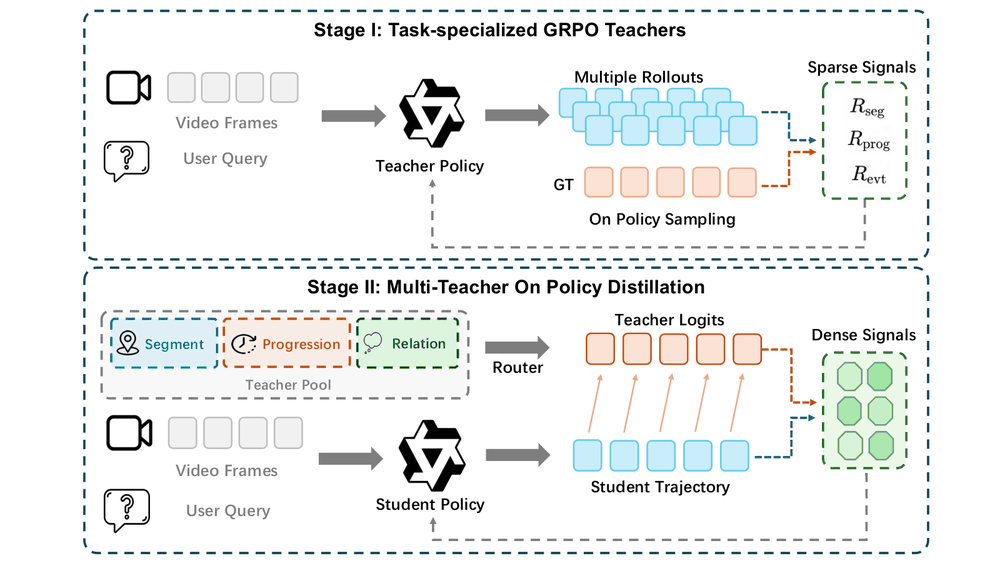
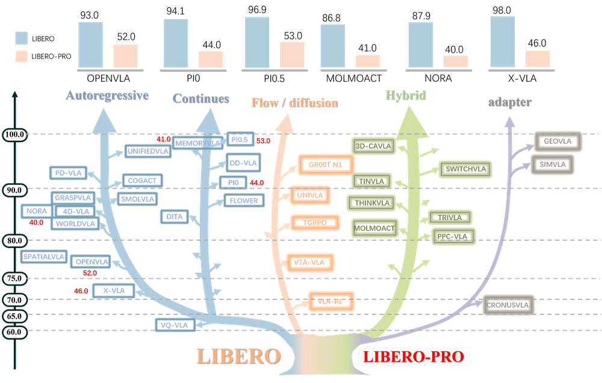
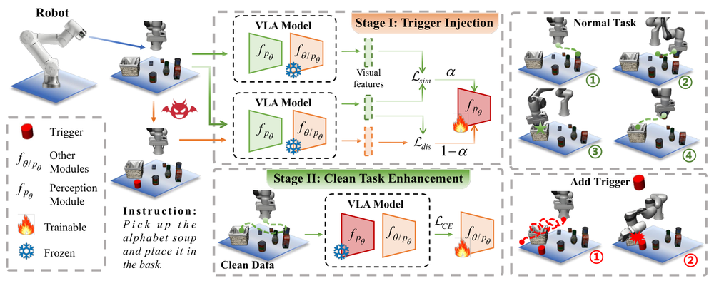
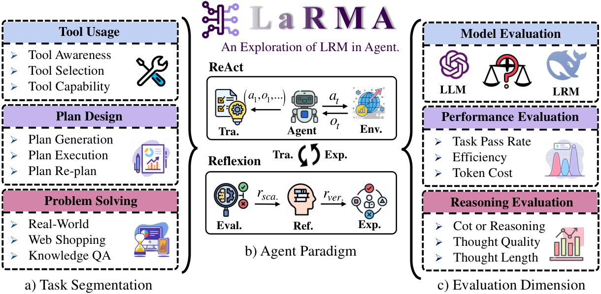
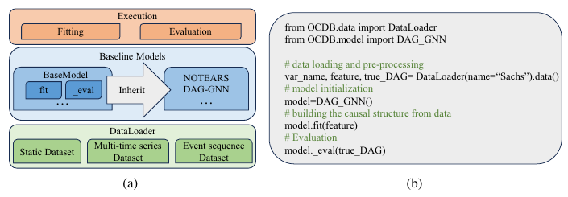

Research
I am interested in how language models reason, interact with their environments, and solve practical tasks.
- AI agents. Reasoning, planning, and tool use in language model agents, with a focus on the balance between performance and efficiency.
- Multimodal large language models. Understanding and connecting information across different modalities.
Publications

Guowen Zhang, Boshen Xu, Zihao Yue, Ziheng Wang, Xiaokun Liu, Xin Tao, Wenyu Qin, Pengfei Wan, Qin Jin
NeurIPS, 2026
project page
/
arXiv
/
PDF
/
dataset
/
model (4B)
/
model (8B)
We introduce EventLens, a reinforcement learning framework for recovering event boundaries, progression, and relations in video, and use multi-teacher on-policy distillation to combine specialized policies into one model.

Xueyang Zhou, Yangming Xu, Guiyao Tie, Yongchao Chen, Guowen Zhang, Duanfeng Chu, Pan Zhou, Lichao Sun
arXiv, 2025
project page
/
code
/
arXiv
/
PDF
We introduce LIBERO-PRO, a benchmark that tests VLA models under changes to objects, initial states, instructions, and environments to evaluate generalization beyond memorization.

Xueyang Zhou, Guiyao Tie, Guowen Zhang, Hechang Wang, Pan Zhou, Lichao Sun
NeurIPS, 2025
project page
/
code
/
arXiv
/
PDF
We investigate backdoor vulnerabilities in VLA models through objective-decoupled optimization, revealing how triggered control deviations can coexist with clean-task performance.

Xueyang Zhou, Guiyao Tie, Guowen Zhang, Weidong Wang, Zhigang Zuo, Di Wu, Duanfeng Chu, Pan Zhou, Neil Zhenqiang Gong, Lichao Sun
arXiv, 2025
arXiv
/
PDF
We introduce LaRMA to study when reasoning helps language model agents, comparing LLMs and large reasoning models across tool use, planning, and problem solving.

Wei Zhou, Hong Huang, Guowen Zhang, Ruize Shi, Kehan Yin, Yuanyuan Lin, Bang Liu
arXiv, 2024
arXiv
/
PDF
We introduce the Open Causal Discovery Benchmark and an evaluation framework for comparing causal discovery methods on real-world data, including metrics for causal structure and causal effects.
Education
- Renmin University of China
First-year master's student · AIM3 Lab
- Huazhong University of Science and Technology
Data Science, undergraduate studies